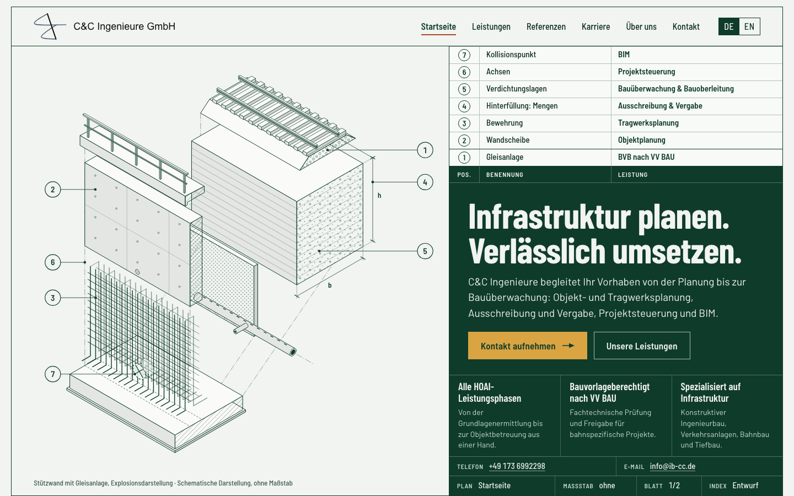
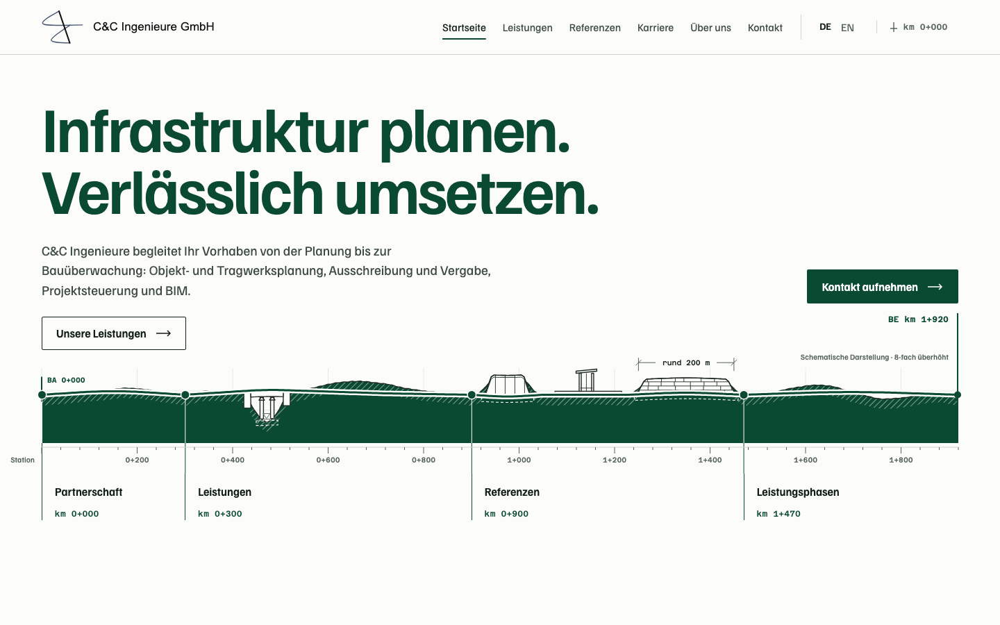
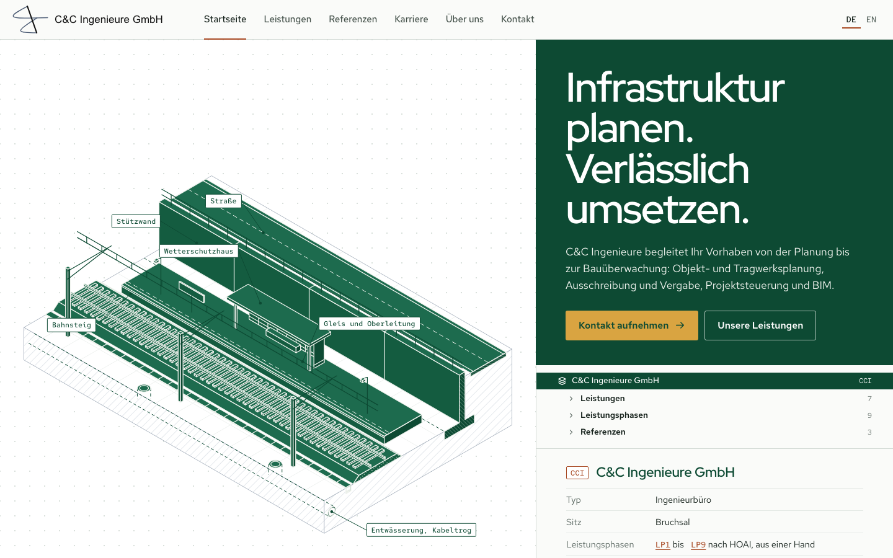

R2 «Explosionszeichnung»Ein Bauwerk in seine Teile zerlegt, jedes Teil eine Leistung.StartseiteReferenzenMobil
R3 «Längsschnitt»Die Seite als ein Höhenplan: jede Leistung an ihrer Station.StartseiteReferenzenMobil
R5 «Modellbaum»Das Büro als BIM-Modell: jedes Element adressierbar.StartseiteReferenzenMobil